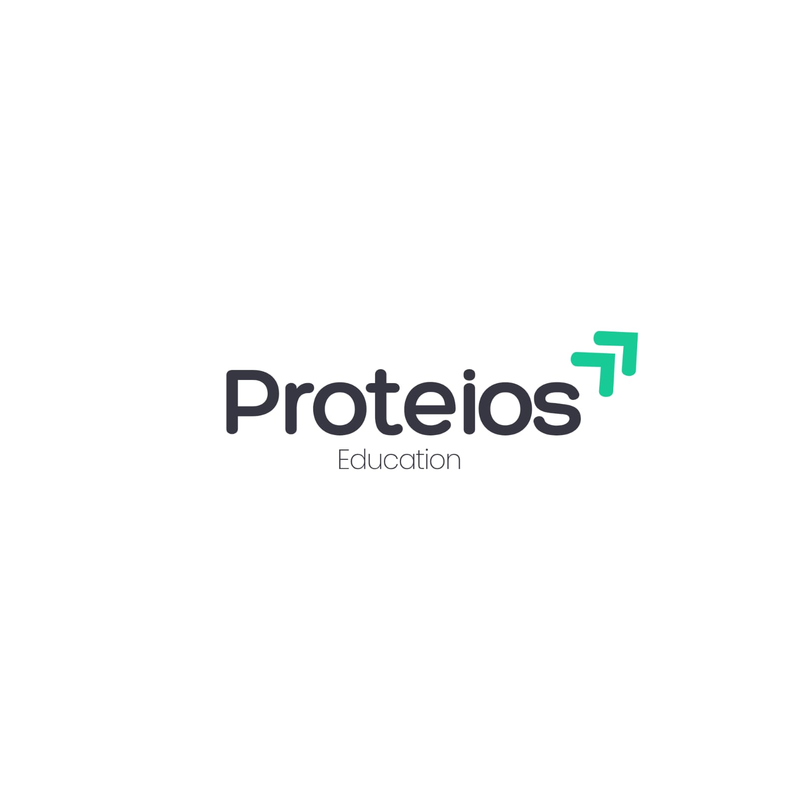

Proteios Education
Operations & Coordination Lead
Professional Role
As the Operations & Coordination Lead at Proteios Education, Baasim Fayaz Khan provides essential support to the organizational framework of educational initiatives. His role ensures that key events and workshops are documented and effectively presented, bridging the gap between vision and operational visibility for the youth of Kashmir.
Team Highlights & Podcasts
Baasim has captured several key moments for the Proteios Podcast Series, hosted by Yonus Beigh (@WhyBeigh). These sessions featured prominent global leaders, including:
From facilitating introductions with leaders like Shifat Qazi and Murtakib Mir to managing operational workflows, Baasim ensures the Proteios team expansion remains strategically aligned.